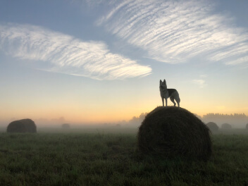
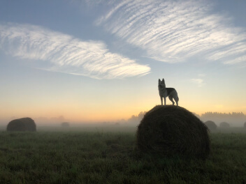
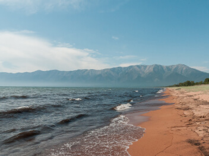
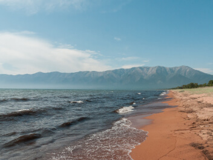

 



Curonian kosa

URL
park-kosa.ruHere, in the middle of forests and sand dunes, you can see two water horizons — the calm Curonian Lagoon on one side and the rippling waves of the Baltic Sea on the other. A unique natural area on the edge of the Russian enclave.
The Kaliningrad region does not end there. For the traveler and explorer, there is also in the neighborhood — the westernmost point of Russia, the Baltic Spit — and the German heritage of the placers of small seaside towns. The atmosphere of these places eliminates the hustle and bustle, plunging into the tranquility of nature and the smell of the steel, cool sea.